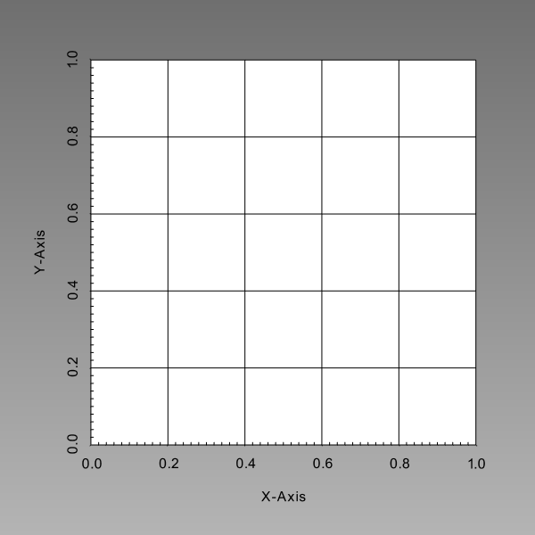

- inputsThe input MeshGenerators.
C++ Type:std::vector<MeshGeneratorName>
Controllable:No
Description:The input MeshGenerators.
- stitch_boundaries_pairsPairs of boundaries to be stitched together between the 1st mesh in inputs and each consecutive mesh
C++ Type:std::vector<std::vector<std::string>>
Controllable:No
Description:Pairs of boundaries to be stitched together between the 1st mesh in inputs and each consecutive mesh
StitchedMeshGenerator
Allows multiple mesh files to be stitched together to form a single mesh.
Example
Consider the following three meshes.

Fig. 1: Left portion of "stitched" mesh (left.e).

Fig. 2: Center portion of "stitched" mesh (center.e).

Fig. 3: Right portion of "stitched" mesh (right.e).
Using the StitchedMeshGenerator object from within the Mesh block of the input file, as shown in the input file snippet below, these three square meshes are joined into a single mesh as shown in Figure 4.
Note that the way that the meshes are merged gives precedence to the left-most mesh listed in terms of sidesets: the sidesets of the second, third, etc meshes will be subsumed into the sidesets of the first mesh. The names of the sidesets in the first mesh are what the names that will remain in the outputted mesh.
[Mesh]
[./fmg_left]
type = FileMeshGenerator
file = left.e
[]
[./fmg_center]
type = FileMeshGenerator
file = center.e
[]
[./fmg_right]
type = FileMeshGenerator
file = right.e
[]
[./smg]
type = StitchedMeshGenerator
inputs = 'fmg_left fmg_center fmg_right'
clear_stitched_boundary_ids = true
stitch_boundaries_pairs = 'right left;
right left'
parallel_type = 'replicated'
[]
[]

Fig. 4: Resulting "stitched" mesh from combination of three square meshes.
Input Parameters
- algorithmBINARYControl the use of binary search for the nodes of the stitched surfaces.
Default:BINARY
C++ Type:MooseEnum
Controllable:No
Description:Control the use of binary search for the nodes of the stitched surfaces.
- clear_stitched_boundary_idsTrueWhether or not to clear the stitched boundary IDs
Default:True
C++ Type:bool
Controllable:No
Description:Whether or not to clear the stitched boundary IDs
- show_infoFalseWhether or not to show mesh info after generating the mesh (bounding box, element types, sidesets, nodesets, subdomains, etc)
Default:False
C++ Type:bool
Controllable:No
Description:Whether or not to show mesh info after generating the mesh (bounding box, element types, sidesets, nodesets, subdomains, etc)
Optional Parameters
- control_tagsAdds user-defined labels for accessing object parameters via control logic.
C++ Type:std::vector<std::string>
Controllable:No
Description:Adds user-defined labels for accessing object parameters via control logic.
- enableTrueSet the enabled status of the MooseObject.
Default:True
C++ Type:bool
Controllable:No
Description:Set the enabled status of the MooseObject.